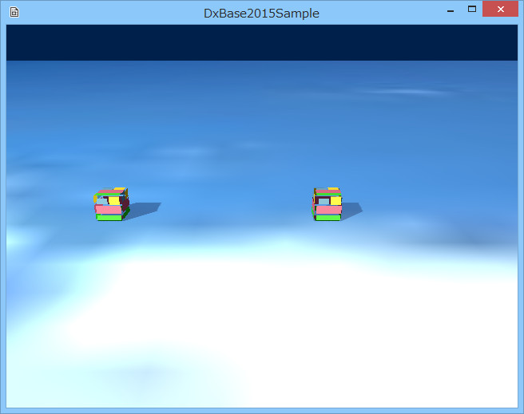

図1001a
//--------------------------------------------------------------------------------------
// class Box : public GameObject;
// 用途: ボックス
//--------------------------------------------------------------------------------------
class Box : public GameObject{
Vector3 m_StartPos;
float m_Span;
public:
//構築と破棄
Box(const shared_ptr<Stage>& StagePtr, const Vector3& StartPos);
virtual ~Box();
//初期化
virtual void Create() override;
//更新
virtual void Update2() override;
};
//更新
virtual void Update2() override;
//初期化
void Box::Create(){
//中略
//相対移動アクションをつける
auto PtrMoveBy = AddComponent<MoveBy>();
PtrMoveBy->SetParams(2.0f, Vector3(m_Span, 0, 0));
//アクション実行開始
PtrMoveBy->Run();
}
PtrMoveBy->SetParams(2.0f, Vector3(m_Span, 0, 0));
//更新
void Box::Update2(){
//相対移動アクションを取り出す
auto PtrMoveBy = GetComponent<MoveBy>();
if (PtrMoveBy->IsArrived()){
//到着していたら移動方向を逆転させて、MoveByを初期化
m_Span *= -1.0f;
PtrMoveBy->SetParams(2.0f, Vector3(m_Span, 0, 0));
//アクション実行開始
PtrMoveBy->Run();
}
}
if (PtrMoveBy->IsArrived()){
//ボックスの作成
void GameStage::CreateBox(){
AddGameObject<Box>(Vector3(-8.0f, 0.5, 0));
AddGameObject<Box>(Vector3(0.0f, 0.5, 0));
}
//初期化
void GameStage::Create(){
try{
//中略
//ボックスの作成
CreateBox();
}
catch (...){
throw;
}
}